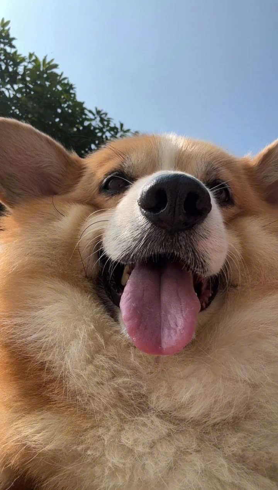
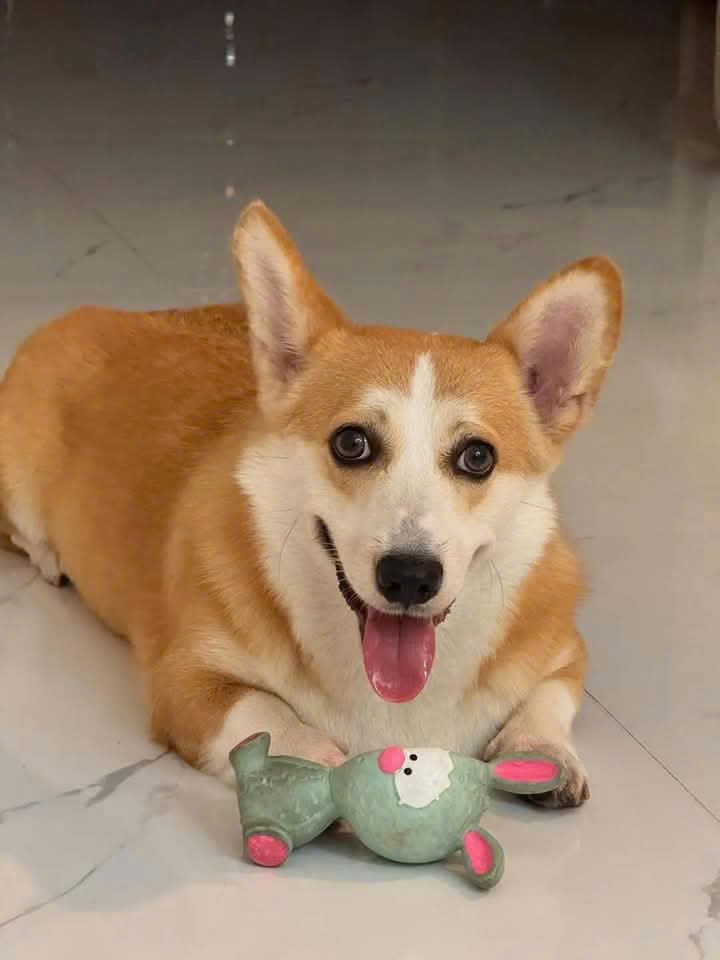

Chó Corgi Wales (tiếng Anh: Welsh Corgi), đôi khi được gọi vắn tắt là chó Corgi, là một loại chó chăn gia súc nhỏ có nguồn gốc ở xứ Wales thuộc Vương quốc Anh. Tên của chúng bắt nguồn từ hai từ Wales "cor" và "gi", có nghĩa là lùn và chó, có thể hiểu là "chú chó lùn";[5] Hai giống chó riêng biệt được công nhận: Chó Corgi Pembroke Wales và Chó Corgi Cardigan Wales. Vào năm 1925, con chó Corgi đầu tiên của xứ Wales được nuôi.[5] Trong lịch sử, Pembroke đã được quy cho dòng chó đi cùng với thợ dệt Flemish từ khoảng thế kỷ thứ 10, trong khi giống chó Cardigan được cho là do những con chó được người định cư Bắc Âu mang theo, đặc biệt là tổ tiên chung của Chó Vallhund Thụy Điển. Theo tạp chí Dog Breed Journal xuất bản năm 2018, cho biết có hai giống corgi khác nhau. Một giống được gọi là Chó Corgi Pembroke Wales là giống có lịch sử ngắn hơn chó Corgi Cardigan Wales.[5] Một mức độ nhất định của việc giao phối giữa hai loại đã được đề xuất để giải thích sự tương đồng giữa hai loại. Chó Corgi Pembroke là giống phổ biến hơn trong hai loại và Chó Corgi Cardigan Wales xuất hiện trong danh sách các giống chó bản địa dễ bị tổn thương của Câu lạc bộ Chăm sóc Chó. Có một số khác biệt về thể chất giữa hai loại theo các tiêu chuẩn giống: Cardigan về tổng thể có kích thước lớn hơn, cả về trọng lượng và chiều cao.
Đặc điểm Sửa
Giống chó Pembroke Welsh Corgi thường có đôi tai dựng đứng cân đối và có hình tam giác đều.Giống chó chuẩn thì thường được nhận ra dựa vào đôi tai:tai phải chắc, có kích thước trung bình và hơi thuôn nhọn đến một điểm tròn. Khuôn mặt chúng thì nên giống loài cáo nên nhiều nơi hay gọi ngắn gọn giống chó này là Foxy Dog[6].Pembroke Welsh Corgis khác với Cardigan Welsh Corgi ở chỗ chiều dài ngắn hơn, tai nhỏ hơn và chân hơi thẳng. Lông của chúng thì thay đổi độ nhạt theo độ dày của thông (thường thì hai bên vai sẽ nhạt hơn). Chúng thường rụng lông chủ yếu vào mùa xuân và mùa thu và có thể rụng hàng năm, với những con cái thì thường rụng khi nắng nóng Giống chó này thường có chiều cao vào khoảng 25-30cm và cân nặng từ 9-13kg. Giống chó này sẽ phát triển đầy đủ kích thước, cân nặng đạt tiêu chuẩn khi 9 tháng tuổi. Tuy nhiên, Pembroke khá tham ăn, do đó rất dễ bị béo phì. Cân nặng của chúng có thể lên đến 20 kg nếu bạn cho ăn quá nhiều mà không thường xuyên tập thể dục.
| Chó Corgi Walse | ||
|---|---|---|
|  | ||
| Nguồn gốc | Walse | |
| Cân nặng | Đực | Cardigan: 14–17 kg (31–37 lb) Pembroke: Không vượt quá 14 kg (31 lb) |
| Cái | Cardigan: 14–17 kg (31–37 lb) Pembroke: Không vượt quá 11 kg (24 lb) | |
| Bộ lông | Cardigan: Ngằn hoặc trung bình, kết cấu cứng, lông dày chống chịu thời tiết Pembroke: Chiều dài trung bình với một lớp lông dày đặc thẳng | |
| Màu | Cardigan: Bầt kỳ, có hoặc không có các mảng lông trắng Pembroke: Đỏ, đen, vàng-nâu nhạt, tím hoặc đen và vàng-nâu, có hoặc không có các mảng lông khác màu ở chân, cổ và ngực[2] | |